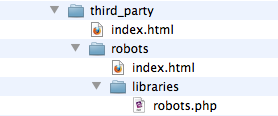

Development
MojoMotor allows for developers to expand its capabilities by programmatically adding new Mojo tags into the system. Addons are implemented as CodeIgniter Packages. As such, they can have their own libraries, helpers, models and language files.
Addons are automatically loaded when they are called,. They must follow a specific naming convention.
Building an addon
MojoMotor addons involve the creation of your own syntax for mojo tags. Mojo tags can be either empty, or container elements. Consider the following Mojo tags:
{mojo:addon:function}
// or alternatively
{mojo:addon:function}
additional info
{/mojo:addon:function}
All tags follow the pattern:
- mojo : First segment is always "mojo". This identifies it within MojoMotor as a Mojo tag.
- addon name : Second segment is the name of the addon you are building. This name must follow specific conventions (see below).
- function : Third segment is the specific function within your addon that should be called.
File structure
Your addon will be placed in system/mojomotor/third_party/, and must have this file structure:
- third_party/
- addon_name/
- index.html
- libraries/
- addon_name.php
- addon_name/

Libraries are required. If you choose to use models, helpers or language files, they would also go as directories underneath your main addon folder.
The Library File
The library file is the most important file of your addon. It should have a class named identically to your addon folder, with an uppercase first letter. If our addon was in a "robots" folder, we'd expect the library to have this pattern:
<?php if (!defined('BASEPATH')) exit('No direct script access allowed');
/**
* Robot example Addon
*
*/
class Robots
{
function addon_function()
{
// code here
}
}
This example would be called in a layout via:
{mojo:robots:addon_function}
For more detailed examples, see the "robots" addon available in /system/mojomotor/third_party/robots
Programming assets
Your addon has full access to every CodeIgniter library, helper and other asset (for example, the database layer). To leverage these tools, you must reference the CodeIgniter super object with get_instance()
$addon =& get_instance();
Once you've assigned the object to a variable, you'll use that variable:
$addon =& get_instance();
$addon->load->helper('url');
Links and function routing within Addons
MojoMotor will automatically re-route any requests made to index.php/admin/addons/{name}/{function}/{optional_parameters} to an addon:
- {name} is the name of the addon.
- {function} is the specific function within that addon.
- {optional_parameters} are any additional segments, and represent any variables that will be passed to the addon function as function parameters.
For example, the contact form is implemented in the style of an addon. It uses the CodeIgniter form helper to generate a link to the send() function like this:
// This line gives us access to "form_open()" and other form helper functions
$addon->load->helper('form');
// This simplified example will create
// <form action="http://example.com/index.php/addons/contact/send">
// That will run the send() function within the contact addon when it is submitted
return form_open('addons/contact/send');